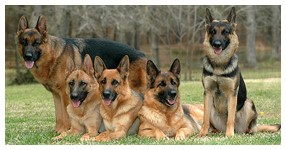

Our security guards are trained to guard Day and Night
, entry and exit points of premises to check all movements
of persons and vehicles, also to patrol all general access areas and to keep records of happenings at any given time.
As a professional security company providing diverse security services, our duty to our clients include some of the following-
- Auxilliary services, such as security consultancy
- Training security guards for organizations and corporate individuals
Like organizing security training courses tailored to suite the requirements of our clients with also in house security
training programmes on our employees throughout the year to broaden their minds on the new ideas and developments in the industry.
- Port reception and protocol
- Executive bodyguards/VIP security
- Escort monitoring service
- Protocol
- Front management
- Crisis management
- Guard Dogs (Kennel Security) training and handing academy.
Other includes personal protection, special investigation/surveillance, sales, installation and maintenance of security equipment
such as CCTV, fire-fighting equipment, intruder alarm system, metal scanners, America barbed wire, gate and key security and Other
security related services.
Kennel Department
Labrador
The labrador is a strongly built, medium-sized,
short-coupled, dog possessing a sound, athletic, well-balanced conformation that enables it to function as a retrieving gun dog; the subsatnce
and soundness to hunt waterfowl or upland game for long hours under difficult conditions; the character and quality to win in the show ring; and the
temperament to be a family companion.
Rottweiler
The ideal Rottweiler is a medium large,
robust and powerful dog, black with clearly defined rust markings. His compact and substantial build denotes great strength, agility and endurance.
Dogs are characteristically more massive throughout with larger frame and heavier bone than bitches.
German shepherd

The first impression of a good German shepherd
Dog is that of a strong, agile, well-muscled animal, alert and full of life. It is well balanced, with harmonious development of the forequarter and
hindquarter. The dog is longer than tall, deep-bodied and presents an outline of smooth curves rather than angles. It looks substantial and not spindly,
giving the impression, both at rest and in motion, of muscular fitness and nimbleness without any look of clumsiness or soft living.
Pit-Bull
The Pit-bull immediately strikes one as being a dog of power,
passion and undying willingness. The bricklike head, which is especially broad between the cheeks (to house its powerful jaws), is carried upon a thickly
muscled, well defined neck. The eyes are round and a colour is acceptable. The teeth should form a sciisors bite. Its coat is made up of thick short tiny
hair. All colours are admissible. The tail tapers to a point.
Doberman
With its uncluttered look and symmetrical
outline, the Doberman is uniquely a product of the 20th century. Its short shiny coat, clipped ears and tail, superb structure and iron
musculature, give the Doberman a trim appearance modern as tomorrow. Outwardly simple, but inwardly complex, it is a mixture of many breeds,
combining the fire and lightning reactions of the terrier with the power and intelligence of the guard and herding breeds. The Doberman was
tailored for use in police and military work, and to be a medium sized protector-companion in the home.
Bullmastiff

This breed is known for its Physical
strength, protection instincts, courageousness and extreme family loyalty. If an intruder crosses its path, a Bullmastiff will typically
use its strength to knock them over or block their path. The breed is very docile in a family environment, however, and makes a great household
pet. Good on commands, short hair for easier grooming, the Bullmastiff proves that good things come in small packages. For a person that needs
the best guard dogs to make less of an appearance until the time is right, the Bullmastiff is your dog.
Charges For Security Services
Several criteria are considered in fixing our charges. Critical among these are:
- Operational requirement of the job.
- Risk assessment of the location.
- Categorization of the client.
The charges are broken down into:
- Wages for security guards constituting 60%;
- Administrative charges including insurance, kitting etc; consituting 40%;
Donforce Security Guards identifies the following grades.
- Multinationals, oil companies and banks
- Corporations and big companies
- Small companies and high network individuals
- Hotels and Restaurant